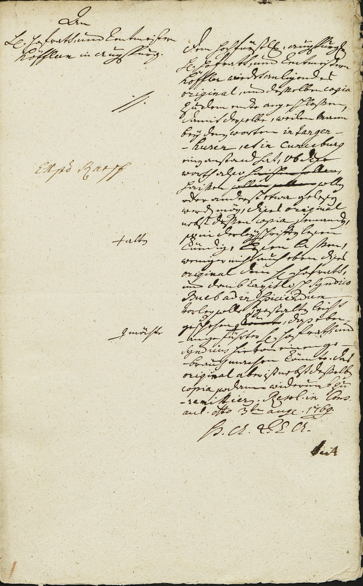

StA Augsburg, Augsburger Pflegämter Akten, 7232



Kommentar
StA Augsburg, Augsburger Pflegämter Akten 7232
Konzept für eine Entschließung an den Augsburger Rentmeister, die Suche nach Paläografiekundigen betreffend1769 August 3 (Augsburg)
Konzept für eine Entschließung an den Augsburger Rentmeister, die Suche nach Paläografiekundigen betreffend1769 August 3 (Augsburg)
Archivaliengattung: Akt
Schwierigkeitsgrad: mittel
Schreiberhände:
- unbekannter Schreiber der Augsburger Regierungskanzlei (S1)
- Karpf (S2)
- Seitz (S3)
Das Konzpt stammt aus einem Akt, der die Suche nach Paläografiekundigen zur Transkription alter Urkunden betrifft (Laufzeit 1769–1773). Es enthält den Wortlaut einer Entschließung der Augsburger Regierungskanzlei an den Augsburger Hofrat und Rentmeister Höfler (hier: Höffler) und vom Geheimen Rat und Vizekanzler Heinrich Seitz (hier: Seiz) unterzeichnet. Höfler wird beauftragt, eine Urkunde, die zwei unleserliche Ortsnamen enthält, Paläografiekundigen vorzulegen. Das Original der Urkunde sowie eine Kopie waren dem expedierten Schreiben beigefügt, worauf auch die zwei Anlagestriche auf der linken Seite hinweisen.
Die eilige, im Mittelband teilweise stark abgeflachte Kurrent ist für eine Konzeptschrift verhältnismäßig gut lesbar, enthält aber einige Korrekturen und Kürzungen (insbesondere die verkürzte Schreibweise der Wortendung -en). Sie weist eine etwas ungewöhnliche k-Form und rundes R auf, zeigt ansonsten typische Buchstabenformen und Ligaturen (c im sch verschliffen). Namen, und lateinische Worte sind in ebenfalls flüchtiger humanistischer Kursive geschrieben.
Während des Schreibens wurde immer wieder etwas zu viel Tinte auf die Feder aufgenommen, was an verdickten Strichen erkennbar wird.
Die eilige, im Mittelband teilweise stark abgeflachte Kurrent ist für eine Konzeptschrift verhältnismäßig gut lesbar, enthält aber einige Korrekturen und Kürzungen (insbesondere die verkürzte Schreibweise der Wortendung -en). Sie weist eine etwas ungewöhnliche k-Form und rundes R auf, zeigt ansonsten typische Buchstabenformen und Ligaturen (c im sch verschliffen). Namen, und lateinische Worte sind in ebenfalls flüchtiger humanistischer Kursive geschrieben.
Während des Schreibens wurde immer wieder etwas zu viel Tinte auf die Feder aufgenommen, was an verdickten Strichen erkennbar wird.
Entzifferung
(Absatz Beginn)
1 (unbekannter Schreiber der Augsburger Regierungskanzlei:) An
2 h(errn) hofrath, und Rentmeistern
3 Höfflern in Augspurg.
4 (Karpf:) Exp(e)d(iert) Karpf
5 (unbekannter Schreiber der Augsburger Regierungskanzlei:) Dem hochfürstl(ichen) augspurg(ischen)
6 h(errn) hofrath, und Rentmeistern
7 Höffler wirdt anligendes
8 original, und desselben copia
9 zu dem endte angeschlossen,
10 damit derselbe, weilen Mann
11 beÿ dene(n) worten in tangen-
12 -husen, et in Cunceburg
13 eine(n) anstand hat, ob dise
14 worth also haissen sollen(getilgt),
15 haissen sollen sollen(getilgt) soll(en)
16 oder anderst etwa gelese(n)
17 werd(en) mög(en), dises original
18 nebst dessen copia jemande(n),
19 +a) alte(n)(Links nachgetragener Text)so in derleÿ +b) schriffte(n) lesen
20 kündig, lesen lassen,
21 weniger nicht auch eben dises
22 original dem h(errn) hofrath,
23 und domb Capitlisch(en) Syndico
24 Bueb ad inspiciendum
25 vorleg(en) solle; gestalte(n) leicht
26 #c) möchte(Links nachgetragener Text)geschehen #d)könnte(getilgt), daß eben-
27 -angeführter h(err)hofrath, und
28 Syndicus hievoneinen ge-
29 -brauch machenkönnte. das
30 original aber ist nebst desselbe(n)
31 copia sodann widerumb zu
32 - remittier(en).Resol(utum) in Cons(ilio)
33 aul(ico) d(a)to 3t(e)n aug(ust) 1769.
34 H(ochfürstlich) A(ugsburgische) R(egierungs) C(anzleÿ) A(llda)
35 (Seitz:) Seiz
(Absatz Ende)
a) Einfügungszeichen
b) Einfügungszeichen, etwas unterhalb der Zeile gesetzt
c) Einfügungszeichen
d) Einfügungszeichen
Transkription
(Absatz Beginn)
1 (unbekannter Schreiber der Augsburger Regierungskanzlei:) An
2 herrn hofrath und rentmeistern
3 Höfflern in Augspurg.
4 (Karpf:) Expediert Karpf
5 (unbekannter Schreiber der Augsburger Regierungskanzlei:) Dem hochfürstlichen augspurgischen
6 herrn hofrath und rentmeistern
7 Höffler wirdt anligendes
8 original und desselben copia
9 zu dem endte angeschlossen,
10 damit derselbe, weilen mann
11 beÿ denen worten „in Tangen-
12 husen, et in Cunceburg“
13 einen anstand hat, ob dise
14 worth alsoa)
15 haissen b) sollen
16 oder anderst etwa gelesen
17 werden mögen, dises original
18 nebst dessen copia jemanden,
19 so in derleÿ altenc) schrifften lesen
20 kündig, lesen lassen,
21 weniger nicht auch eben dises
22 original dem herrn hofrath,
23 und dombcapitlischen syndico
24 Bueb ad inspiciendum
25 vorlegen solle. Gestalten leicht
26 geschehen möchted), daß eben-
27 angeführter herr hofrath und
28 syndicus hievon einen ge-
29 brauch machen könnte. Das
30 original aber ist nebst desselben
31 copia sodann widerumb zu
32 remittieren. Resolutum in consilio
33 aulico, dato 3ten august 1769.
34 Hochfürstlich augsburgische regierungscanzleÿ allda
35 (Seitz:) Seiz
(Absatz Ende)
a) durch Durchstreichen getilgt: "haissen sollen"(Textzitat)
b) durch Durchstreichen getilgt: "sollen sollen"(Textzitat)
c) "alten"(Textzitat) am Rand mit Einfügungszeichen nachgetragen
d) durch Durchstreichen getilgt: "könnte"(Textzitat), "möchte"(Textzitat) am Rand mit Einfügungszeichen nachgetragen